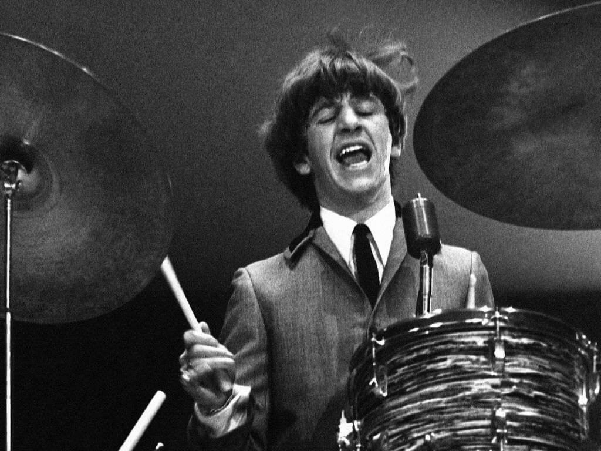
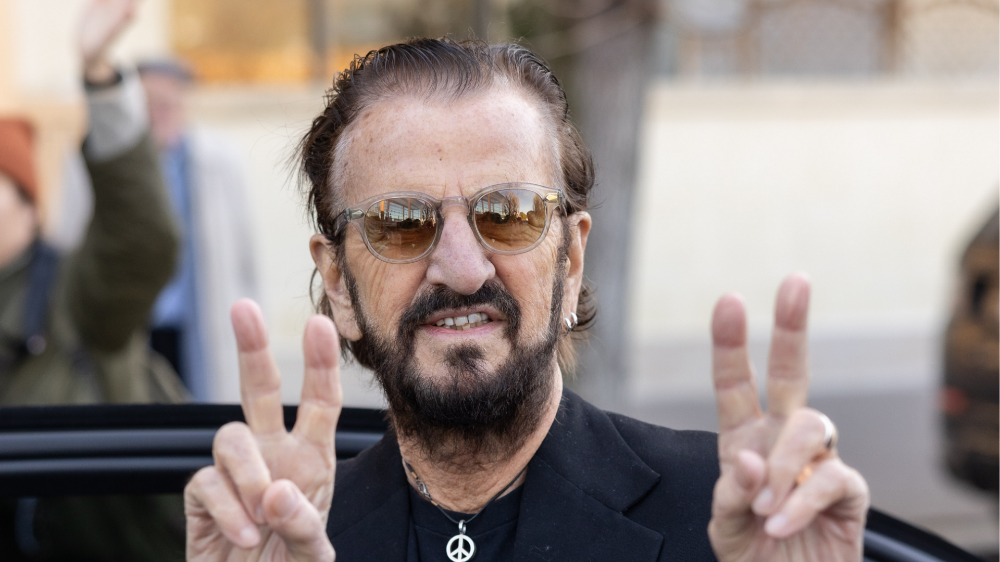

Ringo Starr
Baterista, cantor, compositor e a batida inconfundível dos Beatles.

Primeiros Anos e Infância
Sir Richard Starkey, conhecido mundialmente como Ringo Starr, nasceu em 7 de julho de 1940 em Dingle, uma área trabalhadora de Liverpool. Sua infância foi marcada por sérios problemas de saúde que o levaram a passar longos períodos em hospitais.
Foi durante uma dessas internações que Ringo teve seu primeiro contato com instrumentos percussivos. Esse interesse inicial transformou-se em paixão e, no final dos anos 1950, ele já marcava presença na efervescente cena musical de Liverpool.

A Era Beatles
Antes de se juntar aos Beatles, Ringo era um baterista consolidado na banda Rory Storm and the Hurricanes. Em agosto de 1962, foi convidado para substituir Pete Best, completando a formação definitiva do quarteto.
Com seu estilo único, ele trouxe um groove inconfundível para as composições. Além de baterista, Ringo emprestou seus vocais para clássicos inesquecíveis como "Yellow Submarine" e "With a Little Help from My Friends", e compôs a divertida faixa "Octopus's Garden".

Carreira Solo e Legado
Após o fim dos Beatles, Ringo lançou uma bem-sucedida carreira solo com sucessos como "Photograph" e "It Don't Come Easy". Em 1989, fundou a sua All-Starr Band, um supergrupo itinerante que se apresenta ao redor do mundo até os dias de hoje.
Reconhecido como um dos bateristas mais influentes da história do rock, Ringo foi induzido duas vezes ao Hall da Fama e recebeu o título de Cavaleiro do Império Britânico (Sir). Sua mensagem permanente continua sendo a mesma: "Peace & Love" (Paz e Amor).